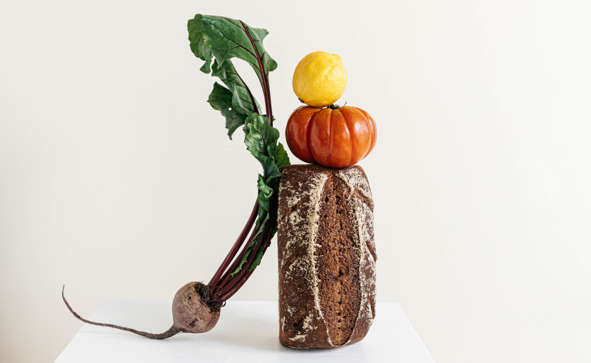
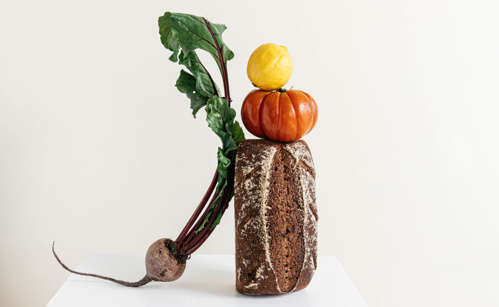

We’re farmers, purveyors, and eaters of organically grown food.
Browse our shop 

Central California — The person who grew these was located in Central California and, er, hopefully very well-compensated.
WHAT WE BELIEVE
We believe in produce. Tasty produce. Produce like:
Apples. Oranges. Limes. Lemons. Guavas. Carrots. Cucumbers. Jicamas.
Cauliflowers. Brussels sprouts. Shallots. Japanese eggplants.
Asparagus. Artichokes—Jerusalem artichokes, too. Radishes. Broccoli.
Baby broccoli. Broccolini. Bok choy. Scallions. Ginger. Cherries.
Raspberries. Cilantro. Parsley. Dill.
What are we forgetting?
Oh! Onions. Yams. Avocados. Lettuce. Arugula (to some, “rocket”).
Persian cucumbers, in addition to aforementioned “normal” cucumbers.
Artichokes. Zucchinis. Pumpkins. Squash (what some cultures call
pumpkins). Sweet potatoes and potato-potatoes. Jackfruit. Monk fruit.
Fruit of the Loom. Fruits of our labor (this website). Sorrel.
Pineapple. Mango. Gooseberries. Blackberries. Tomatoes. Heirloom
tomatoes. Beets. Chives. Corn. Endive. Escarole, which, we swear,
we’re vendors of organic produce, but if you asked us to describe what
escaroles are...